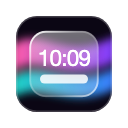

Welcome to Glass Tab
A few quick steps and you're set.
-
1
Keep your new tab page
Chrome may ask whether to keep the change to your new tab page. Choose Keep it. Choosing "Change it back" turns Glass Tab off.
-
2
Add the matching toolbar
A free companion theme matches Chrome's toolbar to the page, in light or dark, so it blends into the glass. Chrome requires themes to be installed separately.
Add Glass Tab ThemeIf an old theme comes back later, Chrome sync restored it from your Google account. Turn off theme syncing in Chrome's sync settings.
-
3
Search from any website
Checking your shortcut…
You can also click the Glass Tab icon in Chrome's toolbar.
-
4
Hide Chrome's bar at the bottom
Chrome adds a small bar with "Glass Tab" and "Customize Chrome" to the bottom of new tabs. To hide it, right-click that bar and choose Hide footer on New Tab page.
No menu? Click Customize Chrome in that bar and turn off "Show footer on New Tab page".
Customize everything with the button in the bottom-right corner of any new tab.